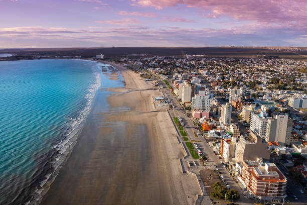
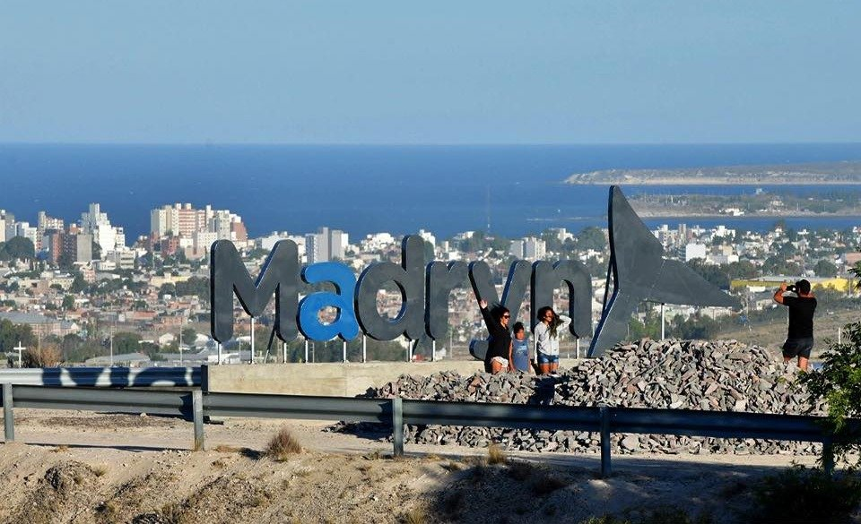
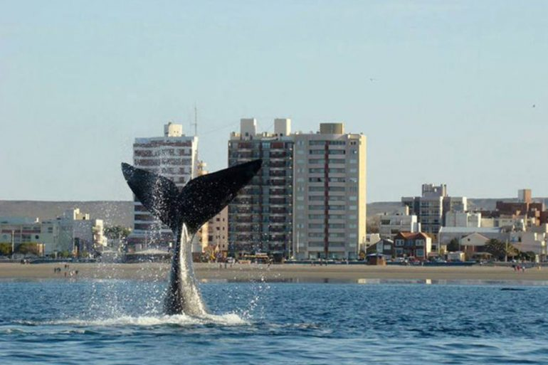

Secrertaria de Turismo de Puerto Madryn

Puerto Madryn y sus alrededores... Veni a conocernos!
Planifica tu viaje
Madryn es una ciudad para disfrutar todo el año. Porque, no importa en el mes en que nos visites, siempre vas a tener un plan para que cada dia de tus vacaciones sea inolvidable.
Como llegar?
Encontra los medios de transporte para venir y conocernos.
Nuestra Fauna
Conoce las distintas especies de animales que visitan nuestras costas.
Materiales Necesarios
Encontra los mapas e imagenes que necesitas.